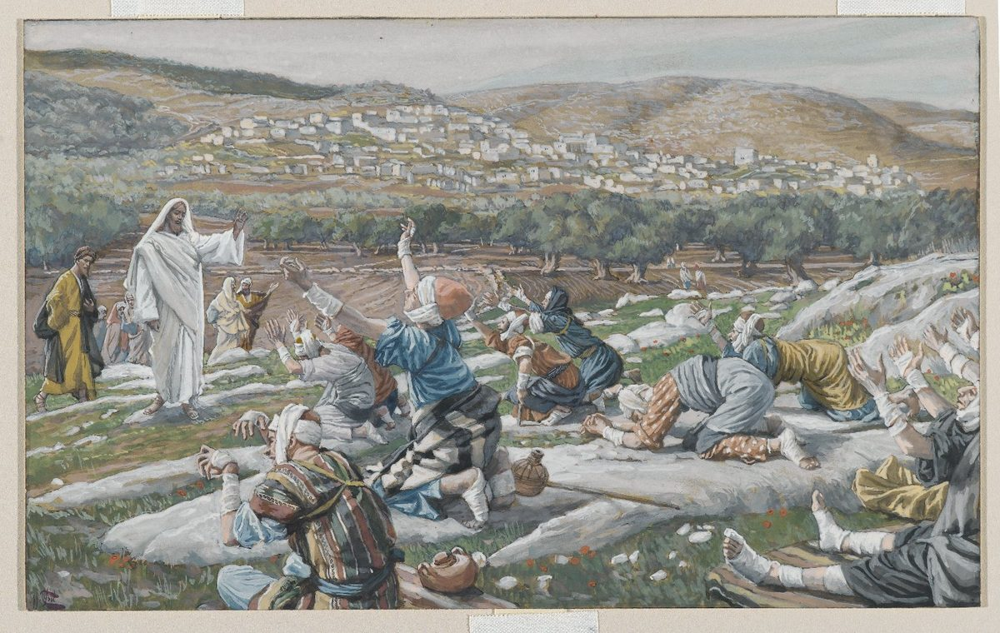

Luke 17 — The Mister Translation

Tissot paints the exact geometry v12 states and no more: ten men, still together, who ‘stood at a distance’ (porrōthen) rather than approaching — the gap between Jesus and the kneeling group is the painting's own subject. Nothing in the scene marks any one of the ten as the Samaritan who will return; that separation is still a verse away. The bandaged heads and patched clothing are Tissot's own research from his 1880s travels in Palestine, not a detail Luke's text supplies.
_-_James_Tissot_-_overall.jpg){kind=link}
Translator’s Notes — verse by verse
⭐⭐⭐ “These little ones” and the millstone are not new here — Matthew and Mark have already run this exact saying, and Luke’s own version quietly drops one detail both of them keep. Compare Matthew 18:6 and Mark 9:42 (already on these pages; the latter not yet in Spanish): both name a mylos onikos, literally a DONKEY-millstone — the large, animal-turned grinding stone, as against a small hand-mill a woman could work alone — hung on the neck of anyone who makes ‘one of these little ones who believe in me’ stumble. Luke keeps the identical phrase tōn mikrōn toutōn, ‘these little ones,’ word for word, but says only lithos mylikos, ‘a millstone-stone’ — the ordinary adjective from mylos, with no onikos attached. Three Gospels agree the stone is fatal; only two of them specify which size.
⚠ “Unavoidable” states a certainty about stumbling blocks that this chapter’s own next verse turns into a warning about causing one. Anendekton, a rare double-negative adjective (‘not admissible,’ here ‘impossible for … not to’), concedes that offenses WILL come in a fallen world — and the concession does nothing to soften the woe that follows for whoever makes one of them happen. The KJV and ASV both read ‘it is impossible but that’; the NWT 1984 reads ‘it is unavoidable that’, which this translation follows.
⭐⭐ Luke’s “seven times” and Matthew’s “seventy-seven” answer two different questions. At Matthew 18:21–22 (already on these pages), Peter asks how many times he must forgive a brother who sins against him, proposes seven himself, and is told ‘not seven times, but seventy-seven times’ — a debate about an upper limit, settled by refusing to set one. Here there is no question, no proposed number, and no multiplication: the seven is simply run twice, sin and return in the same breath, seven times in a single day, and the command each time is flatly ‘you must forgive him.’ Matthew’s scene is about how far mercy extends when pressed for a ceiling; Luke’s is about a brother who keeps coming back, and a forgiveness that keeps meeting him without ever being asked to total itself up.
⚠ “Increase our faith” is what every shelf witness prints, and it is not quite what the Greek says. Prosthes is the aorist imperative of prostithēmi, to ADD, put to — not plēthynō or any other verb this literature uses for growth or increase. The KJV and ASV both read ‘increase our faith’; the NWT 1984 reads ‘give us more faith’ — three respectable paraphrases of a request that, read plainly, does not ask for more of something the apostles already have so much as for the thing itself, ADDED, as if starting closer to zero than the request usually gets translated to admit.
⭐⭐⭐ “Faith like a grain of mustard seed” is not a fresh image for this Gospel — it is the identical Greek sentence Matthew has already used, applied to a different target. Compare Matthew 17:20 (already on these pages): both read pistin hōs kokkon sinapeōs, ‘faith like a grain of mustard seed,’ letter for letter. There the object is a mountain, told to move from here to there; here it is a sykaminos, a black MULBERRY tree, told to uproot itself and replant in the sea — a different plant from the sykomorea, the sycamore, that this Gospel’s Zacchaeus will climb two chapters ahead (19:4, not yet on these pages, and a true New Testament hapax in its own right); English translations that flatten both to ‘sycamore’ erase a distinction the Greek keeps between them. Matthew and Luke agree on exactly how small the faith is and exactly how impossible the result should be; they do not agree on what gets moved.
⭐⭐⭐ “Useless” is a true New Testament near-hapax, and its only other occurrence is a very different mouth. Achreios stands in exactly two verses of the whole New Testament: this one, and Matthew 25:30 (already on these pages), where the master casts ‘the USELESS slave’ into the outer darkness for burying his talent instead of investing it. There the word is a verdict pronounced ON a failed slave, by his master, as a sentence. Here it is a description faithful slaves — who have done everything assigned to them — are told to apply to THEMSELVES, voluntarily, having done nothing wrong at all. The identical adjective condemns one slave and is claimed, without irony, by another who has no case to answer.
⚠ The parable's own ledger has no debt of gratitude on the master's side. Charis, the ordinary New Testament word for grace, does the plain secular work of ‘thanks’ here (v9, echei charin, ‘feels grateful’) — a servant, however faithfully he plows, is not OWED thanks for doing his job, and the parable never suggests he expects any. The point is not that gratitude is wrong but that a slave who has only done his duty has not put his master in his debt; the self-description ‘useless’ two verses later is the same accounting stated from the slave’s own side.
⚠ “Through the midst of Samaria and Galilee” names two regions rather than tracing a road, and this translation keeps the puzzle rather than resolving it. The Greek says only dia meson, ‘through the middle of,’ naming Samaria before Galilee though the journey to Jerusalem runs south; the ASV softens this to ‘along the borders of Samaria and Galilee,’ supplying a sense of boundary the Greek preposition does not itself specify. This translation keeps the bare phrase and lets the reader see exactly what the text gives — a route stated, not mapped.
⭐⭐⭐ “Master” (epistata) is Luke’s own word for Jesus, and this is its one use by anyone outside the Twelve. See the epistata dictionary entry: the word stands in exactly six verses of the whole New Testament, every one of them in Luke, and the other five all come from inside the Twelve — Simon at the lake (5:5), Peter again on the mountain of the transfiguration and in the boat, John once. Ten men with a skin disease, meeting him for the first time, address him with the identical word disciples who have followed him for chapters use.
⭐⭐⭐ This chapter is the payoff of a forward reference this project planted at Jesus’ very first sermon. The lepros dictionary entry already notes that at Nazareth, Jesus recalled ‘many lepers in Israel’ in Elisha’s day, ‘and none of them was cleansed — only Naaman the SYRIAN’ (4:27, already on these pages). Ten men are healed here, all of them presumably Israelites but one; the single man who turns back to give God glory is, once again, the FOREIGNER — a Samaritan doing what nine countrymen do not, echoing a foreign leper doing what no Israelite leper of Elisha’s generation did. The claim Jesus made about his own hometown’s history repeats itself, unremarked, inside his own ministry.
⭐ Ten are cleansed; the text follows only one home. Ekatharisthēsan, ‘they were cleansed,’ is plural and covers all ten in a single clause (v14); the narrative then narrows to heis de ex autōn, ‘but ONE of them’ (v15), and never returns to the other nine except through Jesus’ own question, ‘where are the nine?’ The healing is granted to the group before any of them has said a word of thanks; the story’s actual interest starts only once nine of the ten have already walked out of the scene.
⭐⭐⭐ “Foreigner” is a true New Testament hapax. Allogenēs, literally ‘of another race/kind,’ stands in exactly one verse of the whole New Testament — this one. Outside it, the word is best known from an inscription on the Jerusalem temple’s own balustrade, warning that no allogenēs may pass into the inner court on pain of death; Luke puts the temple’s own boundary-word into Jesus’ mouth, naming the one man who DID cross the boundary that mattered — toward God, not away from him.
⭐⭐⭐ “Your faith has saved you” pays a promise this library made three chapters back, at the letter. The note at Luke 7:48–50 (already on these pages) named this exact verse in advance: hē pistis sou sesōken se would recur ‘three more times, for a healing each time’ — once already at 8:48, and here, the second of the three. One more remains, at 18:42. As at 7:50 and 8:48, nothing in the sentence is unique to this scene; it is Luke’s own fixed formula for a healing sealed by the sufferer’s own trust, said here to a man this chapter has just called by the temple’s word for an outsider.
⭐⭐ “Observation” is a true hapax noun, and the same root returns as a verb aimed AT Jesus rather than used BY him. Paratērēsis, close watching for a sign, stands in exactly one verse of the New Testament; but the cognate verb paratēreō recurs at Luke 20:20 (not yet on these pages), where the same Pharisees’ own agents ‘watch him closely,’ hoping to trap him in his own words. The kingdom, Jesus says here, will not come to men peering for a sign; three chapters later, the peering itself is turned into a plot against him.
⭐⭐⭐ “Within you” is a true New Testament near-hapax, and this project takes no side on which of its two live readings is correct. Entos stands in exactly two verses of the whole New Testament: this one, and Matthew 23:26 (already on these pages), where it names the INSIDE of a cup and dish — an unambiguously spatial, containing sense. See the entos dictionary entry for the full case on both sides: the word’s one other New Testament use favors a literal, individual ‘within,’ which the KJV and ASV both print here; but addressed to hostile Pharisees who have just asked when the kingdom is COMING, most modern readers, and the NWT 1984 and both editions of the TNM, prefer ‘in your midst’ — already present among them, in Jesus himself, rather than seated inside each hostile heart. This translation keeps the literal ‘within,’ the reading closer to the word’s only other anchor, and states the alternative here rather than deciding the argument.
⭐⭐ Luke’s lightning and Matthew’s lightning share an image and not a sentence. Compare Matthew 24:27 (already on these pages): Matthew’s lightning ‘comes out from the east and shines as far as the west,’ naming compass directions; Luke’s ‘flashes’ (an emphatic cognate construction, astrapē astraptousa, literally ‘the lightning, flashing’) from one part of the sky ‘under heaven’ to another, naming no direction at all. Both use the same comparison for the same event — the sudden, universally visible arrival of the Son of Man — in independently worded sentences.
⚠ This is the first time in this Gospel that Jesus tells the disciples PLAINLY that he must suffer and be rejected ‘by this generation’ before any of the rest can happen (v25) — the timeline of an event believers will long for and not see is interrupted, in the same breath, by the timeline of a death that has to come first.
⭐⭐⭐ Matthew has Noah alone; Luke pairs him with Lot, and the pairing is Luke’s own. Compare Matthew 24:37–39 (already on these pages): both Gospels open on the identical claim, ‘just as it was in the days of Noah,’ and both list eating, drinking and marrying running on unaware until the flood ‘destroyed them all’ (apōlesen pantas, word for word in both). Luke alone adds a second scene with the identical structure — buying, selling, planting, building, until fire and sulfur ‘destroyed them all’ a second time, the same verb repeated — drawn from Genesis 19 (already on these pages), the story this Gospel’s own Sodom entry already carries in full. Two catastrophes that come without warning to people going about ordinary life, doubled rather than left as one.
⚠ Matthew and Luke do not even agree on the verb for “eating.” Matthew’s days-of-Noah verse uses trōgontes, a coarse, almost animal verb for eating (‘gnawing, munching’) found nowhere in Luke; Luke uses the ordinary ēsthion. Both Gospels agree that the marrying continued ‘until the day Noah entered the ark’ and that the flood took everyone by surprise; they do not agree on the register of the meal that was interrupted.
⭐⭐⭐ “Remember Lot’s wife” assumes a story this library has already told in full. Genesis 19:26 (already on these pages): fleeing Sodom, ‘his wife looked back … and she became a pillar of salt’ — the one command she was given, and the one thing she did that broke it. The warning here is not to relearn her story but to act as though its lesson were already known: when the day comes, do not go back for anything, not even to look.
⚠ This is the third time this Gospel has stated the losing-your-life-to-save-it saying, and the third time it uses different verbs. Compare Luke 9:24 (already on these pages): there, ‘whoever wants to SAVE (sōsai) his life will lose it, but whoever loses his life for MY SAKE, this one will save it’ — a saying built on the ordinary verb for saving, and tied explicitly to Jesus. Here the verbs change on both sides: peripoiēsasthai, to PRESERVE or procure for oneself, replaces ‘save,’ and zōogonēsei, will KEEP ALIVE, replaces the second ‘save’ — and no reason is given at all, neither ‘for my sake’ nor any other. The same paradox, restated with almost no shared vocabulary, twice in one Gospel.
⭐⭐⭐ “Taken” and “left” are Matthew’s own verbs, moved from the present tense into the future. Compare Matthew 24:40–41 (already on these pages): paralambanetai … aphietai, present tense, of two in a field and two women grinding. Luke’s verbs are the identical roots in the future passive, paralēmphthēsetai … aphethēsetai, and (in the earliest text this translation follows) only TWO illustrations survive rather than Matthew’s two: a bed, shared here with no Matthean parallel at all, and the identical grinding-women scene both Gospels carry. The “two in the field” that would make Luke’s set match Matthew’s exactly is exactly the line the earliest manuscripts do not have (see the note at v36 above) — the overlap between the two Gospels’ examples is not quite as complete as the received text later made it look.
⭐⭐⭐ “Body” here is not the word Matthew used for the same saying — and the difference is a single word apart, not a single letter. Compare Matthew 24:28 (already on these pages), which reads ptōma, CORPSE, a body already dead: ‘wherever the corpse is, there the vultures will gather.’ Luke’s sentence is otherwise close to identical — the same hopou … ekei construction, the same verb episynachthēsontai, the same birds, aetoi — but the noun is sōma, the neutral word for a living or dead BODY. Matthew’s image assumes the death has already happened; Luke’s leaves that one step more open. Aetoi is kept as ‘vultures’ here as at Matthew 24:28, matching the Hebrew Bible’s own nesher, which this library has already noted carries the identical double sense — the eagle that lifts, and the vulture that waits over the dead.
Patterns worth carrying forward
Where this translation keeps the words exact / distinct: useless for achreios (v10), matching the identical word already rendered ‘useless’ at Matthew 25:30; mulberry for sykaminos (v6), kept apart from the sykomorea Zacchaeus will climb three chapters ahead; within for entos (v21), the more literal of two live readings, with the alternative stated rather than adopted; and vultures for aetoi (v37), matching this library’s own choice at Matthew 24:28 even though the noun it modifies there, ‘corpse,’ is not the noun used here, ‘body.’
Echoes paid. The lepros dictionary entry’s own forward note about Naaman the foreign leper (Luke 4:27) pays off at v16’s foreign Samaritan. And the promise made at Luke 7:48–50, that ‘your faith has saved you’ would recur twice more, is paid at v19 — one occurrence now left, at 18:42.
Echoes planted. The third and final use of ‘your faith has saved you’ is paid at 18:42. The cognate of this chapter’s hapax ‘observation’ (v20) will return as a verb, aimed at Jesus by the same Pharisees’ agents, at 20:20. And the mulberry tree of v6 stands against a sycamore not yet climbed, at 19:4.
Next in sequence: Luke 18 — a persistent widow who wears down an unjust judge, a Pharisee and a tax collector who pray two very different prayers in the same temple, and a blind beggar at Jericho healed by the same four words this Gospel has now used three times over.